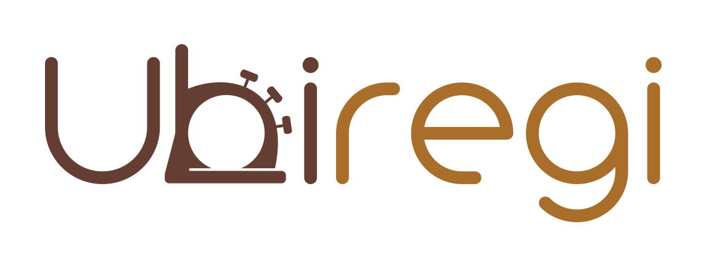
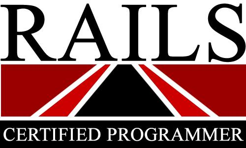

こんにちは世界！
6回目の Rails Girls Tokyo が開催されます!
Ruby on Railsのすてきな世界を私達と一緒に体験しましょう！
第6回 Rails Girls Tokyo の参加者を募集します。
2日間のワークショップとなります。
無料のワークショップですので、お気軽にご参加ください。
参加お申し込みは締め切らせていただきました。ご応募いただいた皆様ありがとうございました。
概要 コーチに教えてもらいながらプログラムを設計して、プロトタイプを作り、コーディングします。
必要なもの 自分のノートパソコン、やる気とキラリと光るイマジネーションを持ってきてください！
コーチ募集は終了しました。たくさんのコーチのお申し出をいただき、ありがとうございました。
| 19:00 - 21:30 |
インストール・ ディまずは、参加者同士、お互いに知り合いになりましょう。ご自分のノートパソコンをお持ちください。 それぞれのパソコンにRubyとRailsをインストールし、Rubyプログラミングの最初の一歩をコーチとともに始めてみましょう。 |
|---|
| 9:00 - 10:00 |
レジストレーション、コーヒー金曜日にRuby on Railsのインストールトラブルがあれば、朝のうちに解決しておきましょう。 金曜日にすべてうまく行ったひとは参加しなくてもOKです。9:30ごろからのんびりきてください。 |
|---|---|
| 10:00 - 10:30 |
開会一日の流れの説明。オーガナイザーから一言。Friday Hugs! |
| 10:35 - 11:00 |
自己紹介一緒のチームのみんなに自己紹介しましょう! |
| 11:00 - 11:50 |
ワークショップ ー ウェブアプリの構築はじめてのウェブアプリにトライしてみよう！ |
| 11:50 - 12:00 |
休憩 |
| 12:00 - 13:00 |
ワークショップ ー ウェブアプリ構築 |
| 13:00 - 14:00 | ランチ |
| 14:00- 14:40 |
スポンサーLT |
| 14:40 - 16:30 |
ワークショップ自分流のウェブアプリに変えてみよう！ |
| 16:30 - 17:00 |
コーチによるライトニングトークス |
| 17:15 - |
アフター・パーティ参加者、コーチ、スタッフによるパーティです。ワークショップで聞き損ねたことや RubyやRailsのこと、ステップアップの方法など、コーチに気軽に質問してみましょう。 |
会場:
グーグル株式会社 地図
東京都港区六本木６−１０−１ 六本木ヒルズ森タワー
Rails Girls Tokyo は以下のすばらしいパートナーとの共同開催です。
ご支援いただけるパートナーを募集しております。こちらのフォームからご応募ください。
 マネーフォワードは、全てのWebアプリをRuby on Railsにより開発しております。我々の事業の発展にはRubyistたちの力が必要です。お金を前へ人生をもっと前へRubyをもっともっと前へ。
マネーフォワードは、全てのWebアプリをRuby on Railsにより開発しております。我々の事業の発展にはRubyistたちの力が必要です。お金を前へ人生をもっと前へRubyをもっともっと前へ。
 私たち永和システムマネジメントは Ruby や Ruby on Railsを活用したアプリケーションをアジャイルに構築できる日本有数のソフトウェア受託企業です。私たちはお客さまの投資を最大化すべく研鑽を続けています。また、Rubyコミュニティの支援も2006年から積極的に行っています。
私たち永和システムマネジメントは Ruby や Ruby on Railsを活用したアプリケーションをアジャイルに構築できる日本有数のソフトウェア受託企業です。私たちはお客さまの投資を最大化すべく研鑽を続けています。また、Rubyコミュニティの支援も2006年から積極的に行っています。
 ペイパルは、いままでにないオンライン決済サービスでショッピングとビジネスの未来をカタチにするイノベーターです。時代のニーズに合わせた、よりかんたんで安心な決済サービスを提案し、世界中のショッピングとビジネスをシンプルに変えていきます。
ペイパルは、いままでにないオンライン決済サービスでショッピングとビジネスの未来をカタチにするイノベーターです。時代のニーズに合わせた、よりかんたんで安心な決済サービスを提案し、世界中のショッピングとビジネスをシンプルに変えていきます。
 株式会社ケーシーエスキャロットは、 「Create(創造)・Cooperate(協力)・Coordinate(調和)・Collaborate(共争)」を経営ビジョンとして、デジタル放送機器、音楽・ニュースの配信分野、AV機器の組込みソフトや、Webアプリケーション開発などを取り組んでおります。
株式会社ケーシーエスキャロットは、 「Create(創造)・Cooperate(協力)・Coordinate(調和)・Collaborate(共争)」を経営ビジョンとして、デジタル放送機器、音楽・ニュースの配信分野、AV機器の組込みソフトや、Webアプリケーション開発などを取り組んでおります。
 株式会社spice lifeは、ECを通して世の中に笑顔を増やすサービスを作ります。spice lifeで開発するのはECの分野、ちょっと変わった、ちょっと新しい、ちょっと世の中を良くするような
ECです。もちろんRailsで開発しています。オリジナルTシャツ作成サービスTMIXは各地のRailsGirlsのスタッフTシャツ作成もしています。
株式会社spice lifeは、ECを通して世の中に笑顔を増やすサービスを作ります。spice lifeで開発するのはECの分野、ちょっと変わった、ちょっと新しい、ちょっと世の中を良くするような
ECです。もちろんRailsで開発しています。オリジナルTシャツ作成サービスTMIXは各地のRailsGirlsのスタッフTシャツ作成もしています。
PIXTAは日本最大級の写真・イラスト・動画素材販売プラットフォームです。プロ・アマ問わず、国内外のクリエイターが撮影した1,800万点以上の素材を販売中です。1点540円～の低価格と高品質・幅広い品揃えで多くのカスタマーに愛用されています。Ruby on Railsで開発しており、インフラはAWSを使用しています。自動テストやCIにも取り組んでおり、システムの持続可能性の向上を図っています。
 GMOペパボ株式会社は「もっとおもしろくできる」を企業理念に、レンタルサーバーサービス「ロリポップ！」や国内最大のハンドメイドマーケット「minne」など様々なサービスを提供しています。RubyやRailsを採用した開発環境で「いるだけで成長できる環境」をコンセプトにエンジニアの人材育成やコミュニティへの支援積極的に行っています。
GMOペパボ株式会社は「もっとおもしろくできる」を企業理念に、レンタルサーバーサービス「ロリポップ！」や国内最大のハンドメイドマーケット「minne」など様々なサービスを提供しています。RubyやRailsを採用した開発環境で「いるだけで成長できる環境」をコンセプトにエンジニアの人材育成やコミュニティへの支援積極的に行っています。
 みんなのウェディングは、「みんなの『大切な日』をふやす」を経営理念にしている会社です。 私たちは現在、主に結婚式場の口コミサイトの運営をしています。 サイトを見ている人の数は、国内最大級で月間約350万人！これからのみんなのウェディングサービスの挑戦は、みんなの「大切な日」をふやすための挑戦です。「大切な日をふやす」会社の仲間をふやしたいと思っています。 ぜひ一緒に働きませんか？
みんなのウェディングは、「みんなの『大切な日』をふやす」を経営理念にしている会社です。 私たちは現在、主に結婚式場の口コミサイトの運営をしています。 サイトを見ている人の数は、国内最大級で月間約350万人！これからのみんなのウェディングサービスの挑戦は、みんなの「大切な日」をふやすための挑戦です。「大切な日をふやす」会社の仲間をふやしたいと思っています。 ぜひ一緒に働きませんか？
株式会社ユビレジは世界初のiPad POSレジで、2010年のiPad発売以来、6年間のサービス提供実績があります。日本には飲食店が約70万店あります。一店舗あたり3人が会計業務を行うとし、さらに飲食店以外のあらゆる『店舗』がその4倍存在するとして、日本で1000万人がレジを使うことになります。全世界を考えてみると、人口比から6億人がレジを使うことになります。この6億人に、使いやすく高機能で安価なPOSレジを届けることが私たちの使命です。
一般社団法人Rails技術者認定試験運営委員会Ruby on Railsの試験運営団体です。受験料金50%オフの学割、教員割を始めています。先日、一般社団法人化しました。バージョンアップ速いRailsですが、負けずに試験問バージョンアップしていきます。どうぞ宜しくお願いいたします。
 GitHub はソフトウェアの共同開発をするための最高の環境を開発・提供しています。1000 万人以上のユーザーが友だち、同僚、クラスメートと、時にはまったく知らない人とでさえ、コードなどを共有して素晴らしいプロジェクトを行っています。
GitHub はソフトウェアの共同開発をするための最高の環境を開発・提供しています。1000 万人以上のユーザーが友だち、同僚、クラスメートと、時にはまったく知らない人とでさえ、コードなどを共有して素晴らしいプロジェクトを行っています。
 日本Rubyの会は、Rubyの利用者の支援とRuby(とRubyのライブラリ)開発者の支援を目的とした一般社団法人です。現在は、ドキュメントの整備や、イベントへの参加協力等を中心に活動しています。
日本Rubyの会は、Rubyの利用者の支援とRuby(とRubyのライブラリ)開発者の支援を目的とした一般社団法人です。現在は、ドキュメントの整備や、イベントへの参加協力等を中心に活動しています。
参加費はどのくらいかかりますか？ 無料です。申し込むときにはわくわくした気持ちだけあればいいです。
どのような人が参加するのでしょうか？ コンピュータを使ったことがある女性ならだれでも参加できます。これまでに開催されたRails Girlsイベントには様々な年齢の女性がやってきました。ご自分のノートパソコンをお持ちください。
男性も参加できますか？ 参加できます。ただし、必ずウェブアプリを作りたがっている女性と一緒に参加してください。申し込み人数が多い場合はお断りすることがあります。
プログラミングの経験があります。手伝うことはできますか？たくさんのご協力のお申し出をいただきまして、ありがとうございました!現在、コーチの募集は終了しております。次回以降のRails Girlsのコーチにご興味をおもちの方は、オーガナイザーまでお声がけ下さい。
 Yuka Kato
Yuka Kato Yoh Osaki
Yoh Osaki Mayumi Emori
Mayumi Emori Yuki Torii
Yuki Torii Hiroshi Shibata
Hiroshi Shibata Akira Matsuda
Akira Matsuda Tomohiro Hashidate
Yoh Osaki
Tomohiro Hashidate
Yoh Osaki Kyosuke Morohashi
Kyosuke Morohashi Yuumi Yoshida
Yuumi Yoshida Kuniaki Igarashi
Kuniaki Igarashi Shihomi Katayama
Shihomi Katayama Kei Shiratsuchi
Kei Shiratsuchi Masayo Hyakubu
Masayo Hyakubu Aki Tada
Aki Tada Chisa Okuyama
Chisa Okuyama Kenji Sakurai
Kenji Sakurai Yudai Suzuki
Yudai Suzuki Yuka Atsumi
Yuka Atsumi Haruka Iwao
Haruka Iwao Hikaru Maruyama
Hikaru Maruyama Hirofumi Wakasugi
Hirofumi Wakasugi Akiko Kashiwabara
Akiko Kashiwabara Midori Ikeda
Midori Ikeda Keiko Fujii
Keiko Fujii Risa Harada
Risa Harada Shoko Terajima
Shoko Terajima